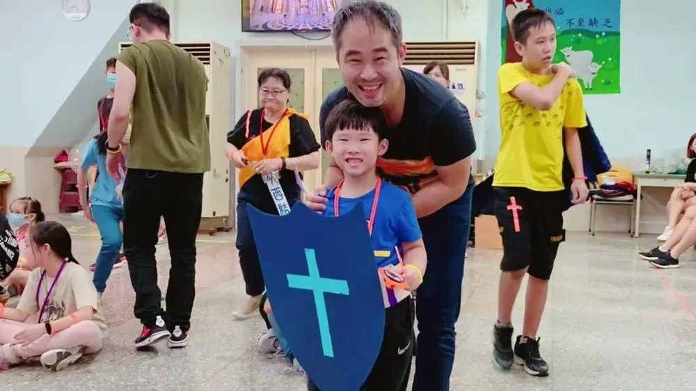

通譯不是換字，是換一整套語感、身分與分寸。
臺南善化人。擁有美國波士頓大學教育背景，曾任職於聯合國，今天把同一套國際口譯與談判標準帶回臺灣，創立榮益齋有限公司，專注於商務英漢通譯服務。
他活躍於商業引薦平台，是 BNI 大台南南區真鑽分會成員，也是 BNI Taiwan 全國翻譯團隊成員。身為台灣基督長老教會信徒，他出身臺南平埔原住民基督徒家族，多年來在教會文字事工與台語音樂創作上持續耕耘。
從波士頓的教會音樂會，到善化的談判桌；從一本百年族譜，到一份合約的逐字校對——對他來說，都是同一件工作：把上一手的意思，完整地交到下一手。
點一下卡片，看看同一句話在兩種語言裡的樣子。
聖詩新譯。頻道上觀看次數最高的一支影片，超過 7,700 次。
主歌第二節，重新譯成能唱的台語詞，收在他的頻道裡。
公司的英文名。gracious 是恩典，benefacts 是益處——兩邊都要站得住。
頻道上的播放清單，共 11 支影片，從法律與歷史看世界的秩序。
卡片上的中英對照，取自他自己的頻道與公司登記名稱。
每一項都對得上公司登記的營業項目，不誇大、不畫餅。

會議、談判、展場、廠訪、教育訓練的即席與逐步口譯；事前把簡報講稿順成「講得出口」的英文。
合約、簡介、規格書、網站文案、教會與非營利文件；排版、打字、影印製本一併處理。
圖書、雜誌、報紙、有聲出版與錄音發行——登記項目裡實實在在有的一項。
從選校文件到面試英文，一路陪到能自己開口。
藝文服務、演藝活動、音樂展演空間；從波士頓的舞台到善化的教會，一貫的熱情。
登記項目裡，還有花卉栽培、糧商、農產品整理、家畜禽飼育。一間從善化出發的公司，把語言、出版、藝文與土地，寫在同一張登記表上。
三個字，各有一個意思；合起來，就是一間公司的態度。
工作先對得起信仰，成果才有根。
翻譯的終點是幫助人，不是炫耀語言。
一間書齋的規模，一間書齋的耐心。
| 公司名稱 | 榮益齋有限公司 |
|---|---|
| 英文名稱 | Gracious Benefacts LLC |
| 統一編號 | 96682355 |
| 負責人 | 傅恩平 |
| 資本額 | 新臺幣 100 萬元 |
| 核准設立 | 2024 年 7 月 4 日 |
| 最後變更 | 2025 年 6 月 6 日 |
| 登記地址 | 嘉義市東區豐年里崇文街 141 號 |
| 財稅營業項目 | 翻譯服務、其他教育輔助服務 |
資料來源：公開公司登記資料。地址為登記地址。
傅恩平是傅祥露的曾孫。先人的故事，是他寫過最認真的一篇。
2015 年春天，臺南業餘文史工作者康文榮從傅家後人手中，取得一本《基督教傅祥露家族家庭族譜》，裡面有始作者的私人筆記與家族照片。傅恩平讀著它，寫下了〈留給後人無價寶貝的傅祥露〉，發表在《新使者》雜誌第 149 期。
傅祥露（1882–1959）是新化教會的初代執事，1921 年建堂落成首次選舉時當選，1926 年再選為長老。他的父親傅水，是傅家第一代基督徒，也是從父姓「傅」的第一代；族譜記載傅水為平埔族裔，現代歸類為西拉雅族。
傅祥露在官營糖業試驗所一路做到「助手」，退休前月俸最高 95 円——當時基層公學校教師月俸約 20 円。他用薪水在新化郊外的礁坑子置產，今日的口埤教會，就蓋在他分給家族晚輩的地上。1959 年秋，他在臺北次子家中辭世，享壽 78 歲。
「撫覽史料，遙想故事；原來，先人留給我們真正的無價之寶，是那對道路、真理、生命不變的追求和信靠。」
——傅恩平〈留給後人無價寶貝的傅祥露〉，《新使者》第 149 期，2015 年
另有教會公報報導佐證：傅祥露為平埔族人、糖業試驗場首位台籍員工，新化教會 1915 年四位設教者之一。

他不只翻譯文字，也翻譯旋律——讓一首歌在另一種語言裡，照樣唱得出口。

他的頻道像一本家庭相簿，也像一間小小的工作室：有聖詩、有台語歌、有孩子們的成長片段，也有教會活動的紀錄。每一支影片，都是他親手拍、親手剪、親手配上文字的。
對他來說，翻譯與音樂是同一件事：讓聽不懂的人聽懂，讓唱不出口的人唱出口。語言換了，意思不能換；意思到了，溫度也不能丟。

每一支都連到他的 YouTube 頻道，點卡片就能看。
Bon Jovi〈Livin' on a Prayer〉改編填詞台語版，親自翻唱。
觀看影片 →「His Sheep Am I」——新譯主歌第二節台語詞。
觀看影片 →族譜裡的故事，拍成影片，留給後人。
觀看影片 →記錄一個共學團如何從零開始。
觀看影片 →聖誕音樂會的活動紀錄。
觀看影片 →善化教會 2023 夏季學校活動紀錄。
觀看影片 →YouTube 頻道 @fuenping —— 23 部影片，2006 年加入。聖詩、台語歌、家族史、教會活動，都在這裡。
前往頻道通譯、筆譯、出版或音樂合作，都可以從頻道開始認識他。
榮益齋有限公司（統編 96682355），負責人傅恩平，登記地址：嘉義市東區豐年里崇文街 141 號。
本頁未刊登個人電話與 Email——公開來源查無相關資料，待補上後再更新。